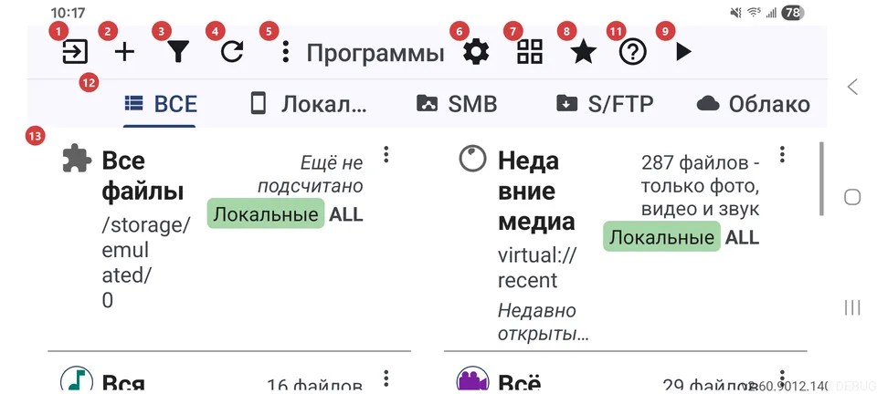
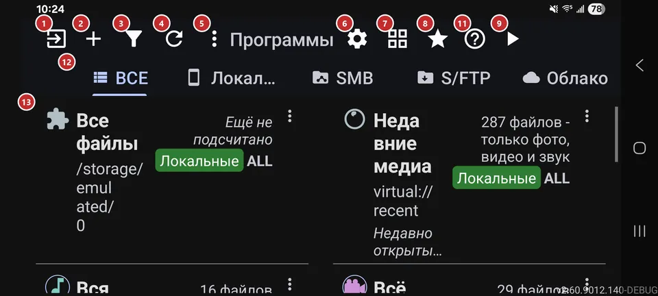

Список ресурсов
Для чего этот экран
В списке ресурсов собраны ваши ресурсы - папки на устройстве, сетевые папки и облачные хранилища, которые вы добавили. Добавьте ресурс, откройте его и просматривайте файлы или сразу запустите воспроизведение.


Порядок действий
- Нажмите «Добавить» 2 и подключите первый ресурс: папку на устройстве, сетевую папку или облако. Пока ресурсов нет, список пуст.
- Если вы используете сетевые или облачные ресурсы, выберите нужный тип на вкладках 12. Вкладки появляются, когда включён хотя бы один удалённый источник.
- Нажмите строку в списке 13, чтобы открыть файлы ресурса в браузере файлов. Значок строки сразу запускает показ.
- «Фильтр» 3 помогает отсортировать список или оставить только нужное. «Обновить» 4 пригодится, когда файлы изменились вне приложения.
- Кнопка 7 переключает вид - список, сетка или таблица, - чтобы на экране помещалось больше или меньше ресурсов.
- «Запустить плеер» 9 пропускает просмотр и запускает выбранный или последний ресурс, а «Избранное» 8 открывает всё, что вы отметили.
- В «Настройках» 6 меняется поведение приложения, «Справка» 11 открывает эту страницу, а «Выйти» 1 закрывает приложение.
Элементы
Панель команд
1ВыйтиЗакрывает приложение или сворачивает его, пока что-то работает в фоне.
Если играет музыка, идёт запись, выполняются операции по расписанию или включены краевые жесты, одно нажатие только сворачивает приложение, чтобы всё это продолжалось, а значок меняется. Когда в фоне ничего нет, одно нажатие закрывает приложение. Долгое нажатие всегда закрывает всё, включая фоновые функции.
2ДобавитьОткрывает экран добавления нового ресурса.
Ресурс - это место, где лежат ваши файлы: папка на устройстве, сетевая папка или облако. После сохранения он появится в списке, и его можно открыть. Нажатие на пустой список делает то же самое.
3ФильтрСортирует список ресурсов и сужает его.
Выберите порядок (вручную, по имени, по дате или по числу файлов), затем ограничьте список по типу ресурса, типу медиа или части имени. Галочка применяет выбор, кнопка сброса фильтров отменяет его. Пока фильтр включён, внизу списка видно, какой именно.
4ОбновитьЗаново проверяет все ресурсы на новые и изменённые файлы.
Нажмите после того, как скопировали файлы из другого приложения или с компьютера, или если сетевая папка была недоступна. Заодно сбрасываются сетевые подключения, а видео, у которых раньше не получилось создать превью, получают ещё одну попытку.
5ЕщёОткрывает меню с действиями, которых нет на панели.
Кнопка появляется, только когда в меню что-то есть: программы (если панель программ выключена), кнопки, не поместившиеся на узком экране, и «Справка». На маленьком экране ничего не пропадает - кнопки переезжают сюда.
6НастройкиОткрывает настройки приложения - четыре вкладки.
Вкладки: «Общие», «Медиа», «Плеер» и «Управление». Начните с «Общих»: там язык, тема и профиль устройства. Если не знаете, где искать параметр, в настройках есть поиск.
7Сетка / списокПереключает вид ресурсов: список, сетка или таблица.
Значок показывает вид, который включится следующим, а выбор запоминается. Таблице нужно широкое окно - планшет, режим рабочего стола или большой развёрнутый экран: в ней есть столбцы с именем, источником, файлами, содержимым и путём и панель сведений. В узком окне вид переключается между списком и сеткой.
8ИзбранноеОткрывает всё, что вы отметили избранным, в одном месте.
Открывается «Избранное» в браузере файлов. Кнопка видна, когда «Избранное» включено в настройках; файлы вы отмечаете при просмотре.
9Запустить плеерЗапускает воспроизведение ресурса, не открывая браузер файлов.
Играет выбранный ресурс. Если ничего не выбрано, берётся тот, что вы открывали последним, а если и такого нет - первый в списке. Пока список пуст, кнопка неактивна.
10Поиск ресурсовИщет ресурс по имени или пути в таблице.
Поле видно только при включённой таблице. Введите несколько букв, и строки сужаются прямо при вводе. Очистите поле, чтобы вернуть весь список.
11СправкаОткрывает справку по этому экрану.
Вы узнаете, что делает каждая кнопка и в каком порядке обычно ими пользуются; номера совпадают с метками на снимке экрана.
Ресурсы
12Фильтр типов ресурсовПоказывают только ресурсы одного типа.
«ВСЕ» показывает всё, а «Локальные», SMB, S/FTP и «Облако» оставляют только свой тип. Вкладка есть лишь для включённого источника, а вся полоса скрыта, пока не включён хотя бы один сетевой или облачный источник: иначе «Локальные» не отличались бы от «ВСЕ». Долгое нажатие на вкладку сворачивает полосу в небольшую плашку, а нажатие на плашку возвращает её.
13РесурсыВаши ресурсы: одна строка или плитка на каждый.
Нажмите строку, чтобы открыть файлы в браузере файлов. Значок строки запускает показ, а долгое нажатие открывает редактирование ресурса. У каждой строки есть кнопки: изменить, скопировать настройки, переместить вверх или вниз, удалить и «Ещё».
- Отмена
- Перед удалением ресурса приложение спросит подтверждение, затем уберёт ресурс из списка и отменит операции по расписанию, которые его используют. Файлы останутся на месте, а ресурс можно добавить снова.